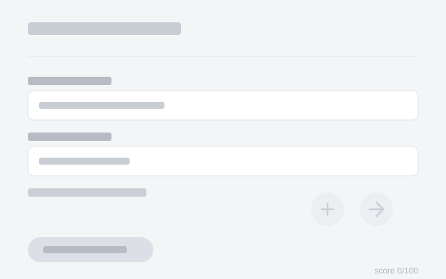
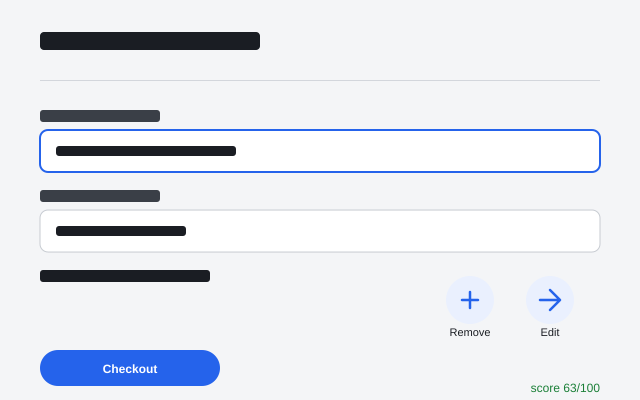
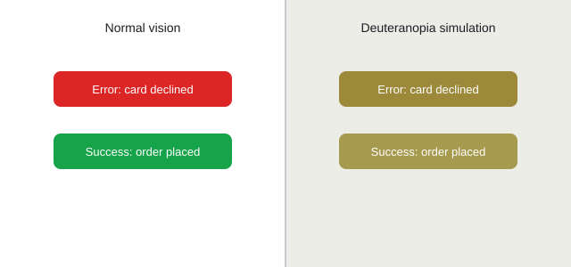

SeeAll
Accessibility from the first draft, not the last fix.
Accessibility comes last.
Design → build → launch → "oh, accessibility."
of accessibility defects originate in design.
Source: Deque Systems case study.
Late fixes cost more.
Hours to fix one accessibility issue, by project stage.
Fixing accessibility after launch takes about 12x the work.
Source: Deque.
The scale.
of the top 1 million home pages fail WCAG.
Source: WebAIM Million 2026.
have low-contrast text.
Source: WebAIM Million 2026.
people have a vision impairment.
Source: WHO World Report on Vision.
Check accessibility while you design.
Upload a mockup screenshot — in seconds get:
Measured checks
Contrast and text checks computed exactly, not guessed.
AI findings
Issues tagged with the specific WCAG criteria they violate.
Simulations
Colour-blind and low-vision views of your screen.
Concrete fixes
Ready-to-paste CSS for every flagged issue.
Hear this screen
Spoken readout in Arabic, French and English.
How it works.
Fallback: NVIDIA → Gemini → measured-only.
Demo: checkout screen.


30 flat flags grouped into a few real issues.

Proof.
automated tests.
real screens tested, 4 in Arabic.
audit time.
We disabled a check that produced 37 false positives rather than mislead designers.
Responsible AI.
Screenshots are never stored.
Measured checks are exact; AI findings are labelled suggestions.
Low-confidence findings say "Needs human check."
A designer always decides.
A screenshot can't check everything — keyboard behaviour, screen-reader code, or media captions.
Future vision.
Today
Screenshots
Next
Figma plugin
Then
Source code and live URLs
Later
An Arabic/RTL-aware model
Moving accessibility to the very start.